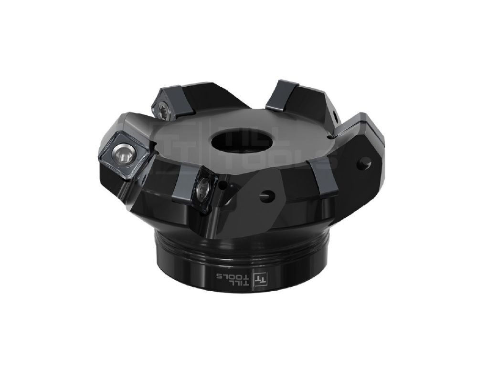
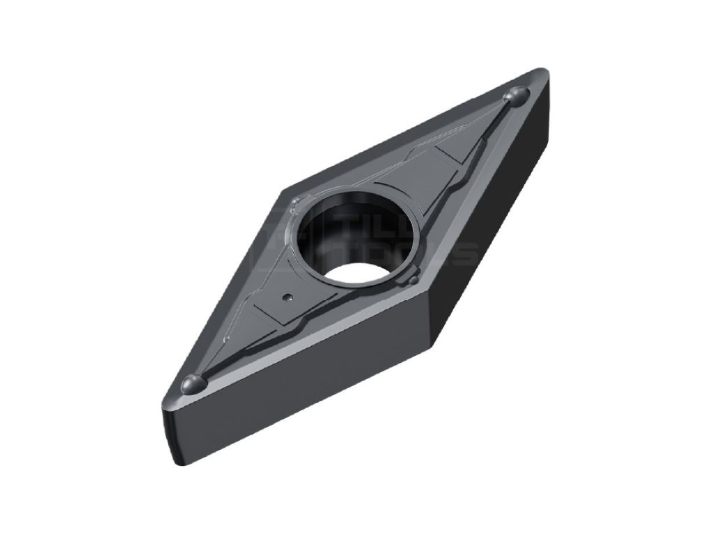
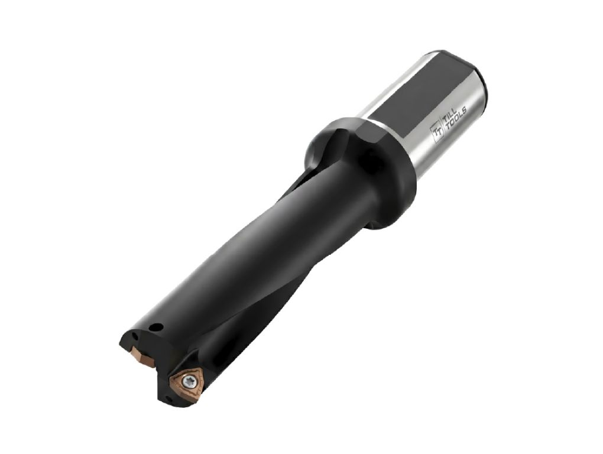

In a multi-year collaboration with the precision tool manufacturer “Till Tools”, I created a series of product visualizations in Blender covering more than 50 different products in various configurations. These include indexable inserts, drills, and milling cutters. The renders are used for the company’s website. Instead of using CAD software, I modeled and rendered everything in Blender. This allowed me to achieve realistic materials and lighting setups to present the products in a visually appealing way.
2022–2024
Blender
In a multi-year collaboration with the precision tool manufacturer “Till Tools”, I created a series of product visualizations in Blender covering more than 50 different products in various configurations.
These include indexable inserts, drills, and milling cutters. The renders are used for the company’s website.
Instead of using CAD software, I modeled and rendered everything in Blender. This allowed me to achieve realistic materials and lighting setups to present the products in a visually appealing way.

SN12 face milling cutter 45° with internal cooling

VBMT indexable insert for steel and stainless steel

Solid drill 3D PRO with internal cooling